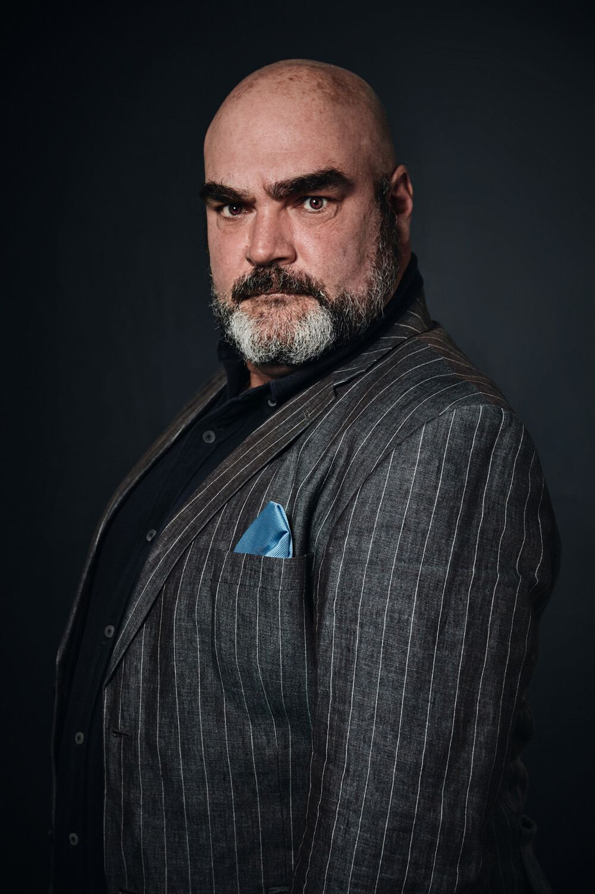
Portretten
Profielfoto's en zakelijke portretten, in kleur of zwart-wit.
Studio of locatieMeer info
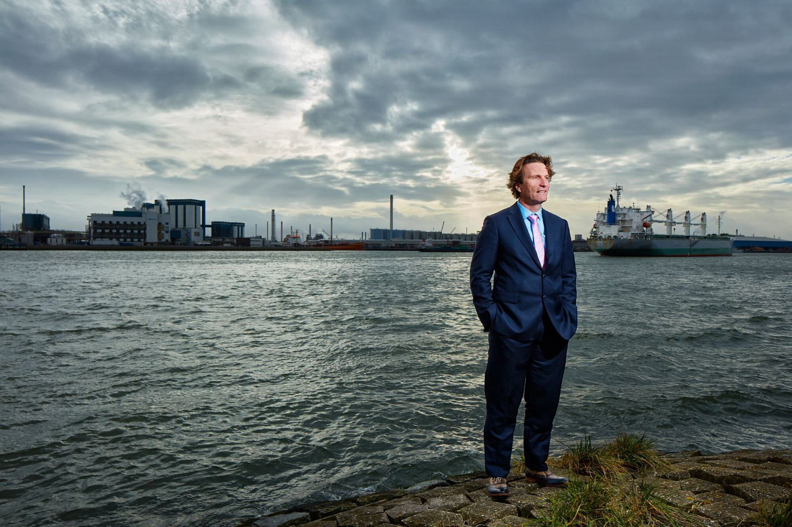
Bedrijfsfotografie, portretten en reportages vanuit Breda, sinds 1989. Voor bedrijven, instanties en particulieren, en het liefst op locatie.
Voor communicatie- en designbureaus, multinationals, kleinere bedrijven en particulieren. In de studio aan de Pigalle in Breda of bij u op locatie.

Profielfoto's en zakelijke portretten, in kleur of zwart-wit.
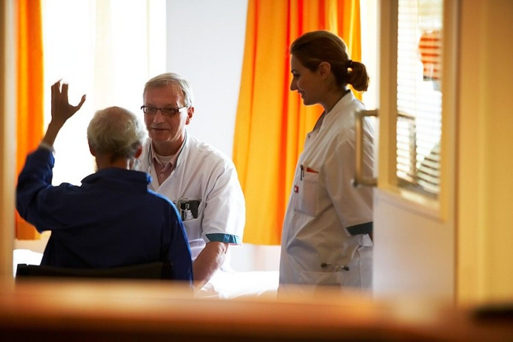
Op de werkvloer, in de zorg en op straat: laten zien hoe het echt gaat.
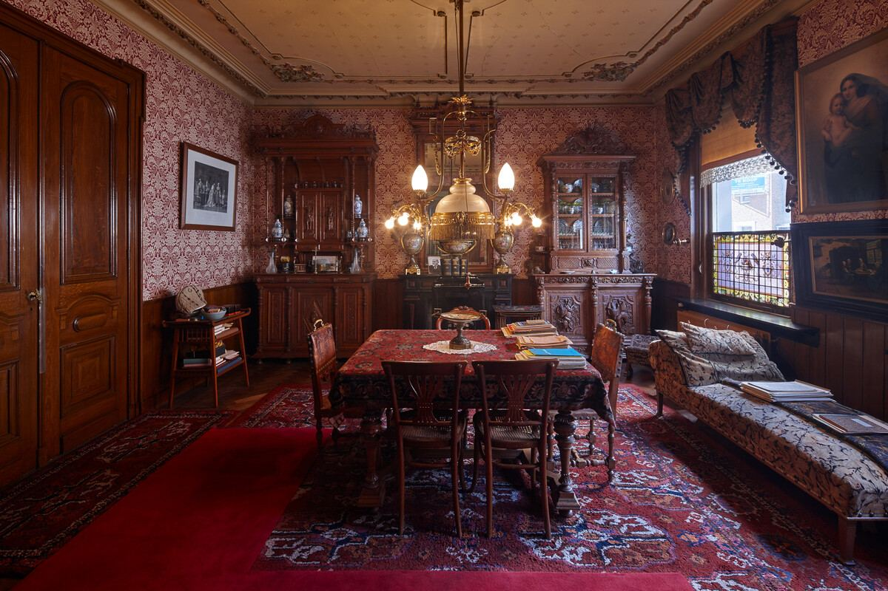
Kantoren, showrooms, woningen en erfgoed, binnen en buiten.
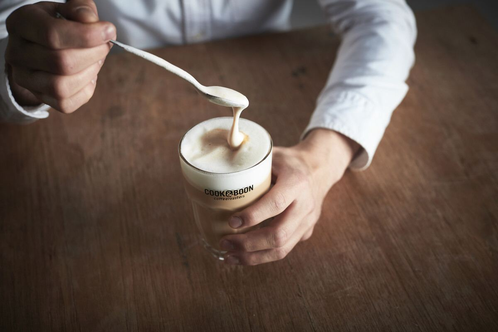
Gerechten, dranken en producten, sfeervol of los op wit.
Ook voor bewegend beeld: bedrijfsfilms en clips.
gemiddeld op Trustoo, op basis van 13 reviews
Bekijk alle reviews →"Frans is een zeer prettig en attent persoon om mee samen te werken. Hij is goed bereikbaar, reageert snel en komt zijn afspraken altijd na. Daarnaast is hij een kundig fotograaf die graag meedenkt en initiatief toont."
Yuri Rappange, YuCo Medical · mei 2026"Ik was op zoek naar een professionele portretfoto voor m'n werk. Frans begreep direct wat de bedoeling was en heeft mijn verwachtingen ruimschoots overtroffen. Contact was prettig en ik zou hem aan eenieder aanraden."
Alex de With · februari 2023"Voor de eerste keer met Frans gewerkt en gemerkt dat hij veel ervaring heeft in verschillende vormen van fotografie. Het was prettig samenwerken, hij luistert goed naar de wensen en denkt mee."
Céline · mei 2023"Onlangs bij Frans uitgekomen voor nieuwe profielfoto's. De ontvangst en interactie waren zeer hartelijk en gezellig. Verder maakt Frans er echt werk van en levert een uitstekende prestatie. Aanrader!"
Hans Jongejan · april 2023"Contact was binnen een snelle tijd, ook was de heer Frans ruim op tijd en de foto's waren boven verwachting!"
Furkan Esikli · december 2025Een greep uit opdrachten en eigen werk.
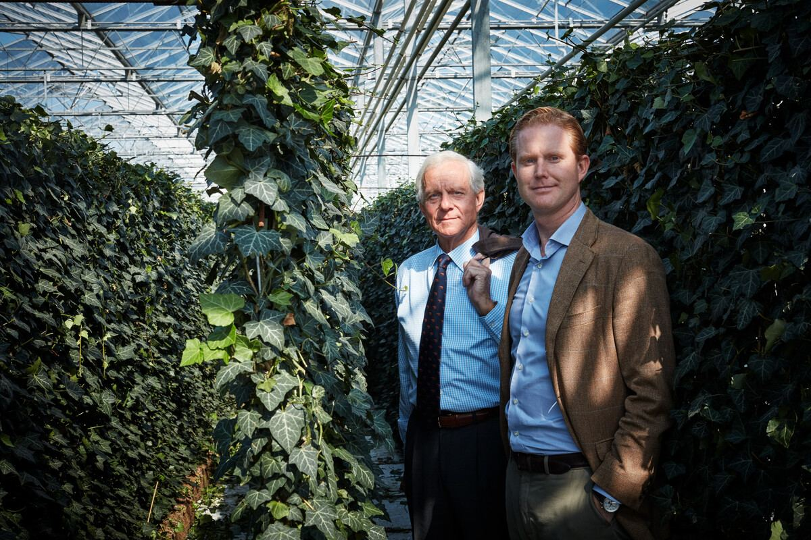
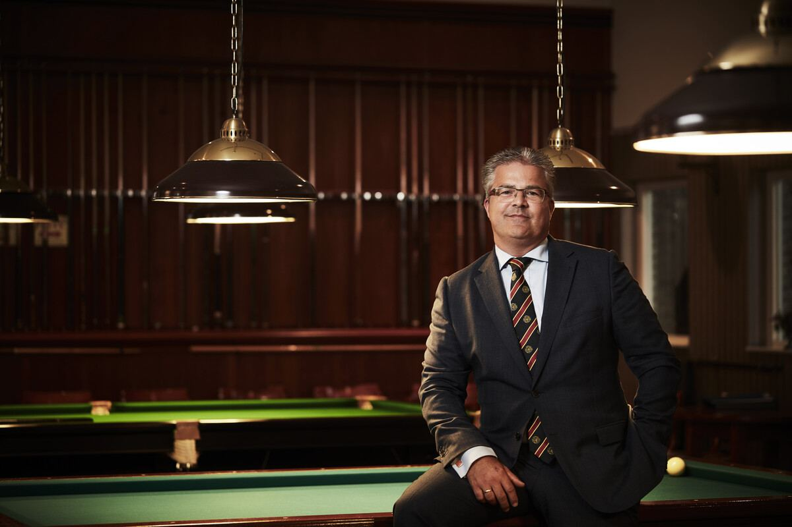
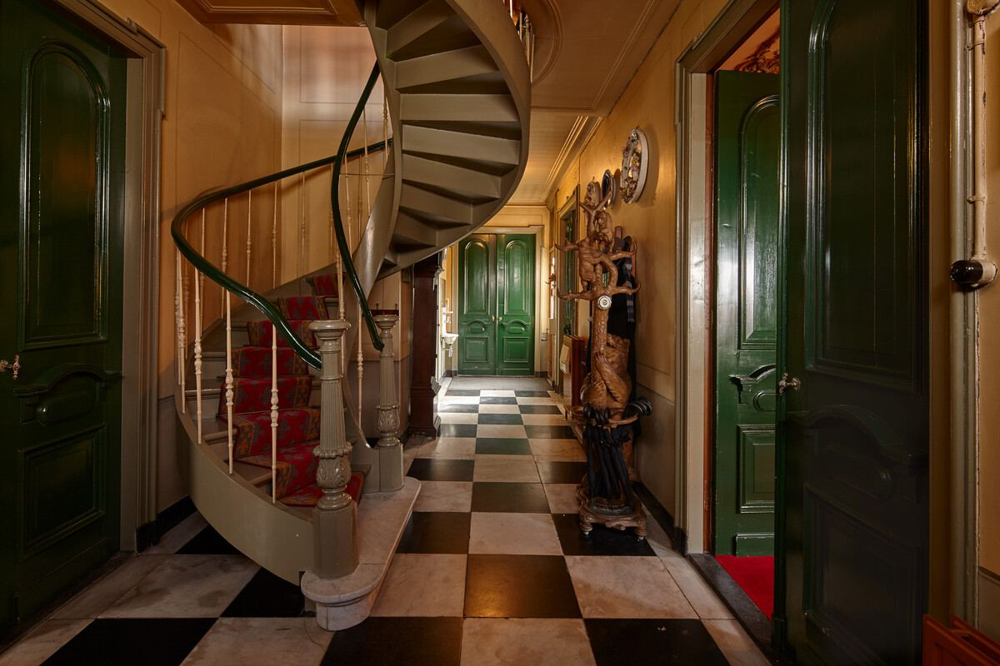
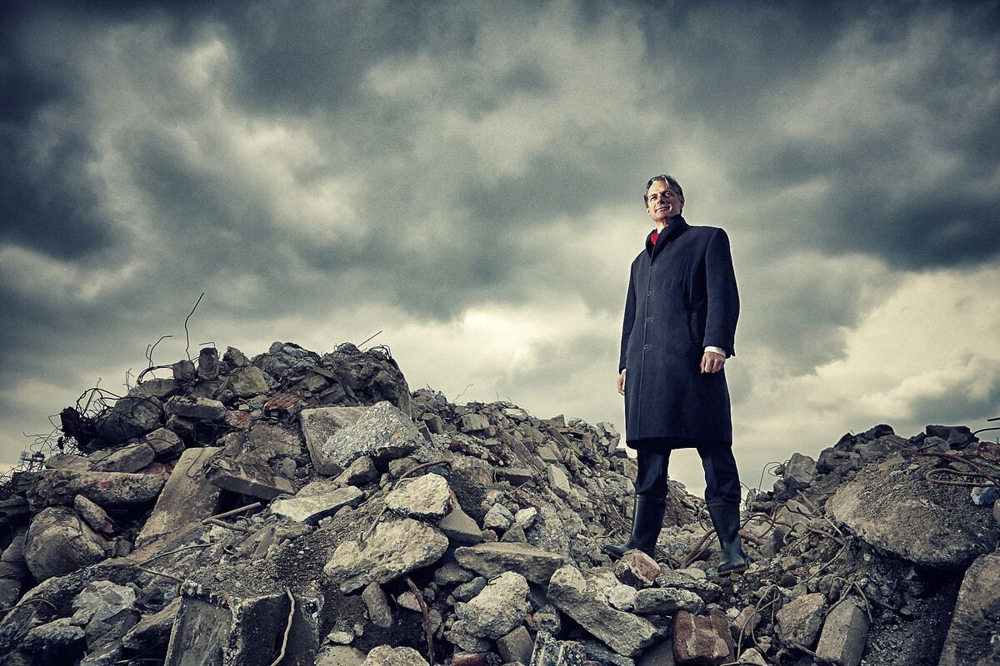
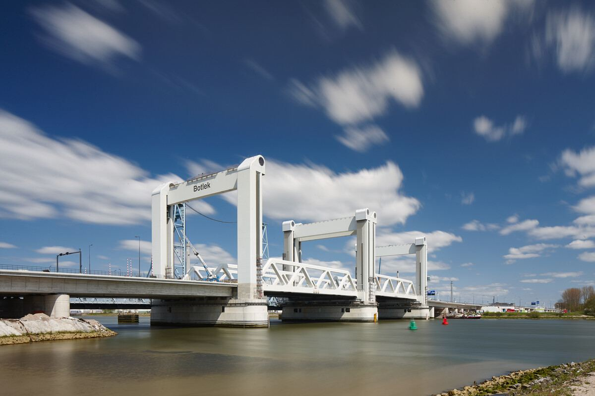
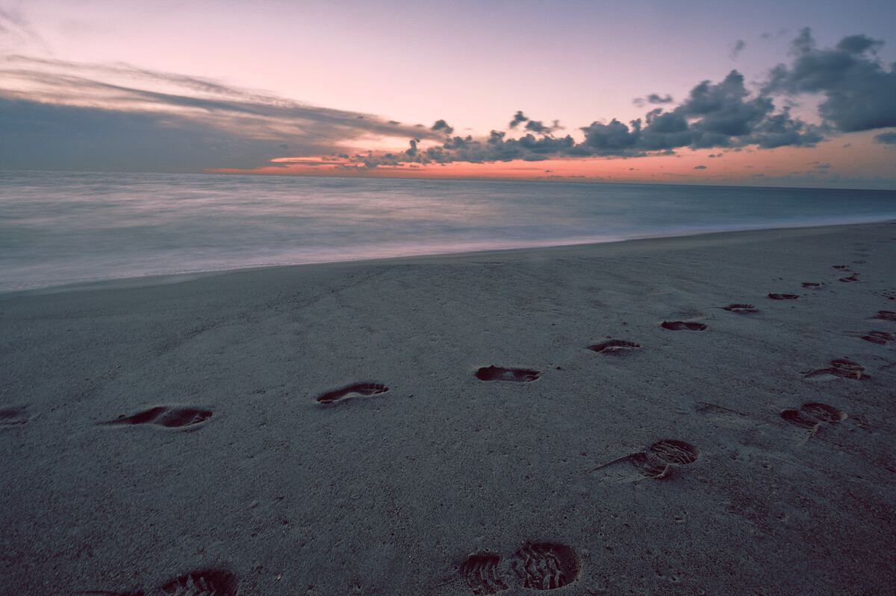
Van multinational tot lokaal bedrijf. Een greep uit de opdrachtgevers sinds 1989:
Naast opdrachten maakt Frans eigen werk. Sinds eind 2011 fotografeert hij transformatorhuisjes door heel Nederland. Bouwwerkjes waar niemand van opkijkt, panoramisch in beeld gebracht.
Niet via een lijst met adressen, maar door zich onderweg te laten verrassen. Inmiddels zijn het er meer dan 200, op de meest onverwachte plekken.
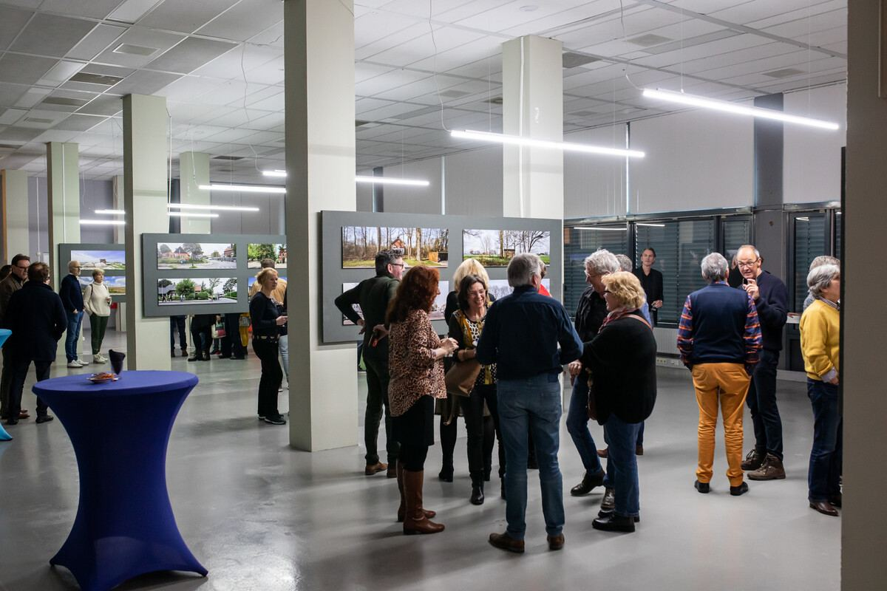
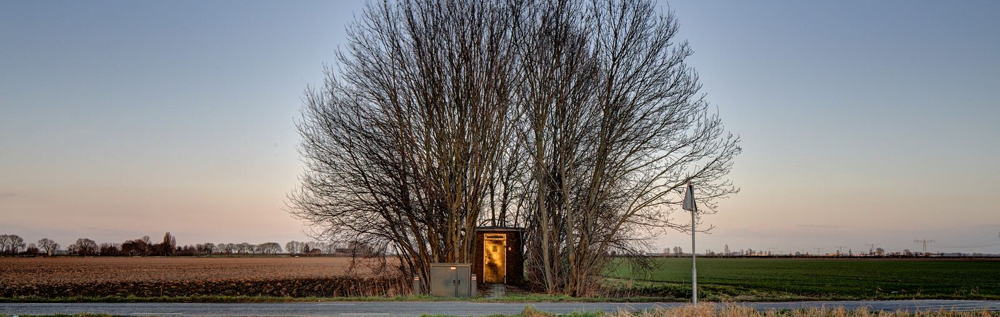
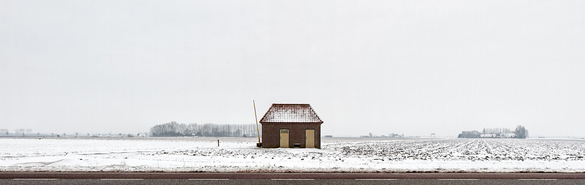
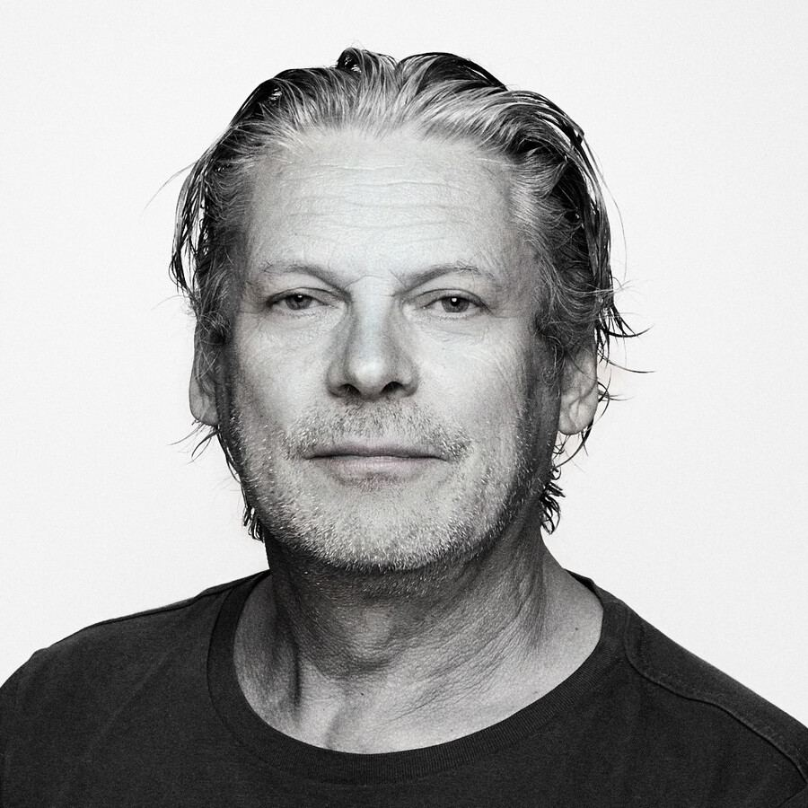
"Ik werk graag op locatie, want daar heb je de meeste kans dat iets onverwachts of toevalligs extra mooie dingen oplevert."
Frans begon als bedrijfsfotograaf en -filmer bij Holmatro, dat hydraulisch reddingsgereedschap maakt voor de hele wereld. Daar leerde hij het vak. In 1989 opende hij zijn eigen studio in Breda.
Sindsdien fotografeert hij van advertising en stills tot portretten, reportages en interieurs. Bij een opdracht draait het om goed luisteren en meedenken, zodat de foto's doen wat ze moeten doen. Met een blijvende passie voor zwart-wit en echte materialen zoals Polaroid 55.
Vertel kort wat u in beeld wilt hebben. Frans neemt contact met u op om de mogelijkheden door te nemen.
Bel of mail Frans direct, dan denkt hij met u mee.